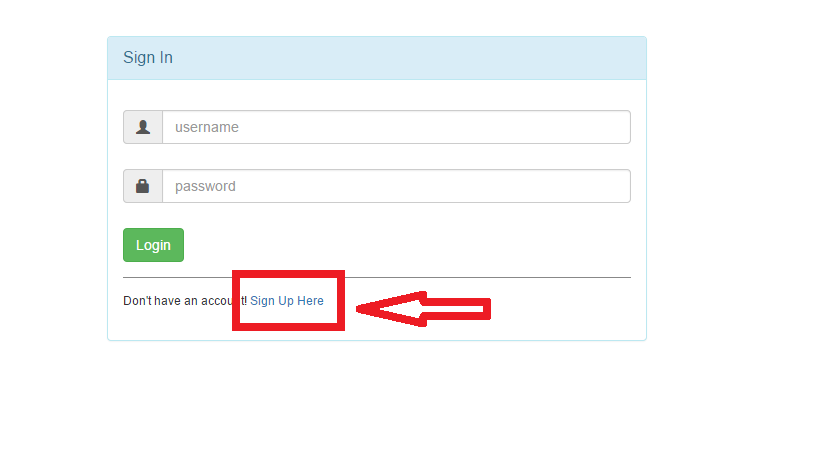
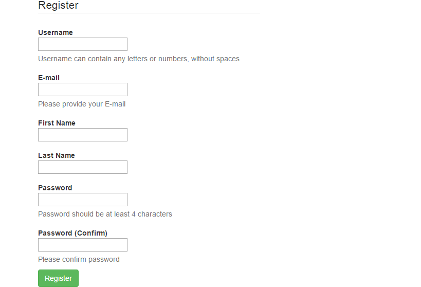
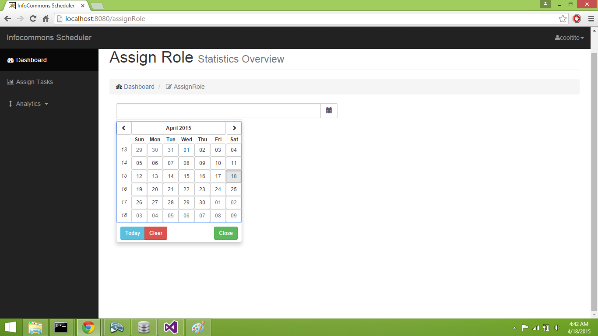
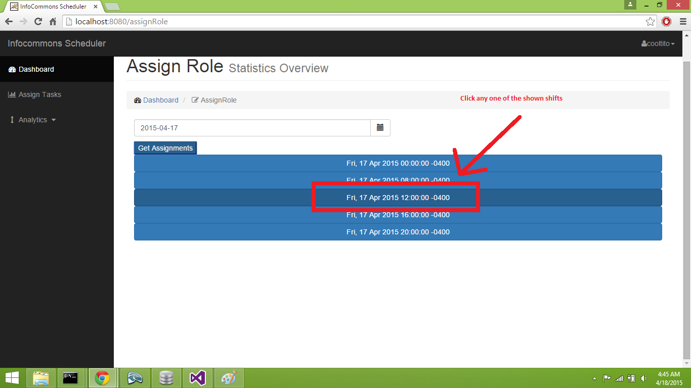
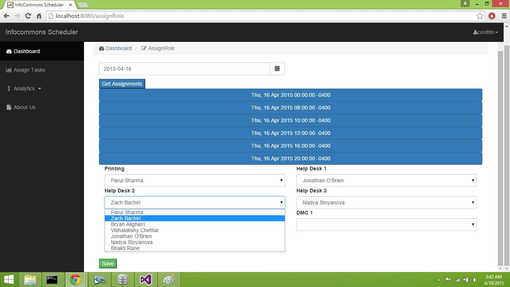

Steps to use
To use the project, one has to be an authorized user. There are no features available to unauthorized users.1) Signup

2) Register

3) Login
Login into the application using the new credentials.
4) Homepage

5) Assign Role - choose date

6) Assign Role - choose shift

7) Assign Role - assign roles

8) Assign Role - assign roles
Now you can view the alalytics from the menu on the right.